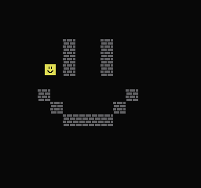
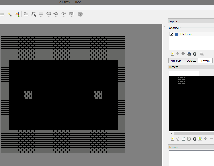

08、背景 碰撞
背景和精灵有些区别，我们无法读取PPU中的字节。
我们先搞个地图，每个块大小是 16x16，填充整个背景需要 240字节的数组。X从0-15，Y从0-14。我们把数组放到RAM中，以防止被修改。
后面演示运行情况，先看下数组结构。
const unsigned char c2 [] = {
0,0,0,0,0,0,0,0,0,0,0,0,0,0,0,0，
0,0,0,0,0,0,0,0,0,0,0,0,0,0,0,0，
0,0,0,0,0,0,0,0,0,0,0,0,0,0,0,0，
0,0,0,0,0,1,0,0,1,0,0,0,0,0,0,0，
0,0,0,0,0,1,0,0,1,0,0,0,0,0,0,0，
0,0,0,0,0,1,0,0,1,0,0,0,0,0,0,0，
0,0,0,0,0,0,0,0,0,0,0,0,0,0,0,0，
0,0,0,1,0,0,0,0,0,0,1,0,0,0,0,0，
0,0,0,0,1,0,0,0,0,1,0,0,0,0,0,0，
0,0,0,0,0,1,1,1,1,0,0,0,0,0,0,0，
0,0,0,0,0,0,0,0,0,0,0,0,0,0,0,0，
0,0,0,0,0,0,0,0,0,0,0,0,0,0,0,0，
0,0,0,0,0,0,0,0,0,0,0,0,0,0,0,0，
0,0,0,0,0,0,0,0,0,0,0,0,0,0,0,0，
0,0,0,0,0,0,0,0,0,0,0,0,0,0,0,0
};
1表示游戏中的块

要检测碰撞，你只需要将X和Y的低字节去掉，然后拼到一起，后面解释方法
X>>4 将X向右挪4位，Y & 0xF0 将Y的低4位变成0，用他和数组中的值逐个对比，1碰撞，0没有
我会检测精灵的4个方向，并在碰撞的时候修改U D L R 4个属性值（就是精灵的上下左右方向是否有碰撞）
我先进行X移动，检查是否碰撞，如果碰撞了则跳，再移动Y，检测是否碰撞，如果碰撞则跳过，也就是不执行移动的动作。具体看函数bg_collision()
这段代码应该精简，因为每一帧都会有XY的变动，我会修改代码实现变速。每帧1个像素太慢了，会造成很差的游戏体验。
我习惯使用 Tiled Map 制作游戏关卡，他使用非常简单，并且可以导出csv文件，这样可以方便制作C的数组。但是这个工具无法导入NES格式的.chr文件，所以我不得不重做所有类型的地图块。这很简单，我们只需要2个种，空白块和普通的地图块。
我先用NES Screen Tool制作图块，然后绘制2x2的块。看起来这样的做法有点蠢，但是当你的游戏里有几十种图块的时候，这样做起来就会很happy了
因为没有办法导出nametable的图片，所以我截图然后在GIMP编辑，另存为metatile.png
以tileset的方式导入 Tiled Map地图编辑器中。因为nes屏幕工具会使像素加倍，所以每个图片的尺寸都是32x32
（翻译备注：意思就是编辑器截图图像比较大，不是8x8的，而是32x32的，所以才会有上面这种情况）
编辑完关卡地图，导出csv文件。

SV文件转换为C数组是件小事儿，但是我还是做了个python3的脚本来实现。我将C数组导入我的代码，然后使用一个指针的数组指向前面的数组。
#include “CSV/c1.c”
#include “CSV/c2.c”
#include “CSV/c3.c”
#include “CSV/c4.c”
const unsigned char * const All_Collision_Maps[] = {c1,c2,c3,c4};
现在，我编写了一些代码，将一个2×2块的块打印到屏幕上，使用了一个大的循环，里面用了vram_put()方法。
使用vram_put()前需要先关闭屏幕，写入PPU是以从左到右，然后下一行开始从左到右。这样你可以很简单的就写完整个屏幕。
Start按键可以切换下一个地图显示
当你按右的时候，X的位置会+1，然后检测4个碰撞点，如果发生碰撞则会结束向右移动（X会-1）
（翻译备注：作者用 坐标变换后的点去检测碰撞，发生碰撞就退回变化，如果没有碰撞，精灵就会按照变化后的点移动--也就是重新绘制精灵新的位置）
测试：按方向撞墙，碰撞可以生效。按Start按钮，背景变化，碰撞依旧有效，因为RAM加载了一个新的地图碰撞检测。
注意：我使用屏幕滚动的方式将整个背景向下移动了1个像素。Y scroll=ff(-1)，因为精灵总是会向下移动一个像素，所以必须将背景整体下移1个像素。
https://github.com/nesdoug/09_BG_Collide/blob/master/collide.c
https://github.com/nesdoug/09_BG_Collide
地图加载部分的代码写的不是很好，因为只能绘制一种贴图块，而且属性表不会修改，稍后我会介绍一个更好的加载方式（11、Metatiles），在此之前我先说一下滚动。